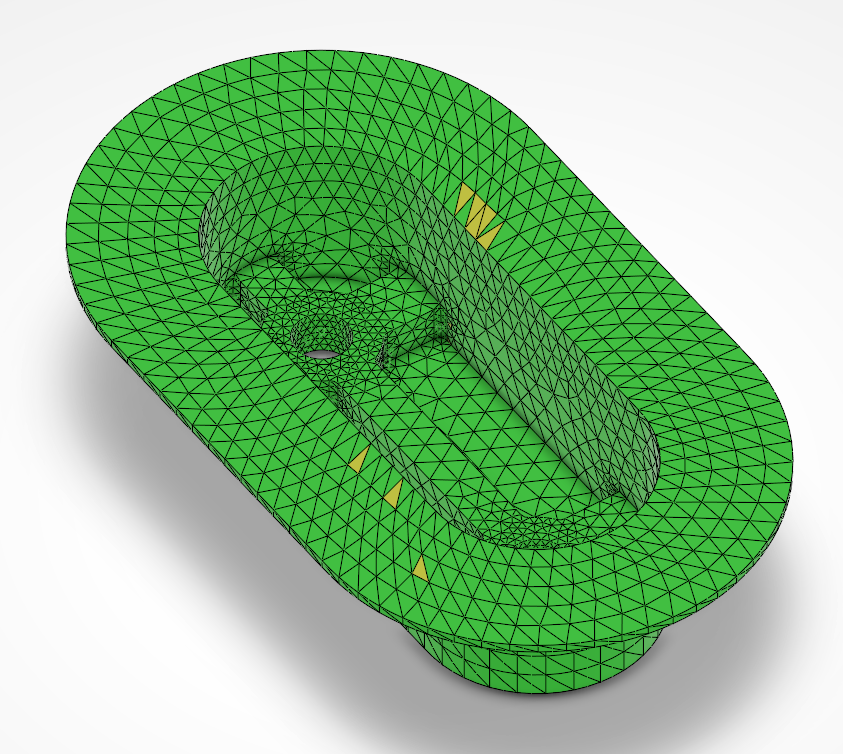
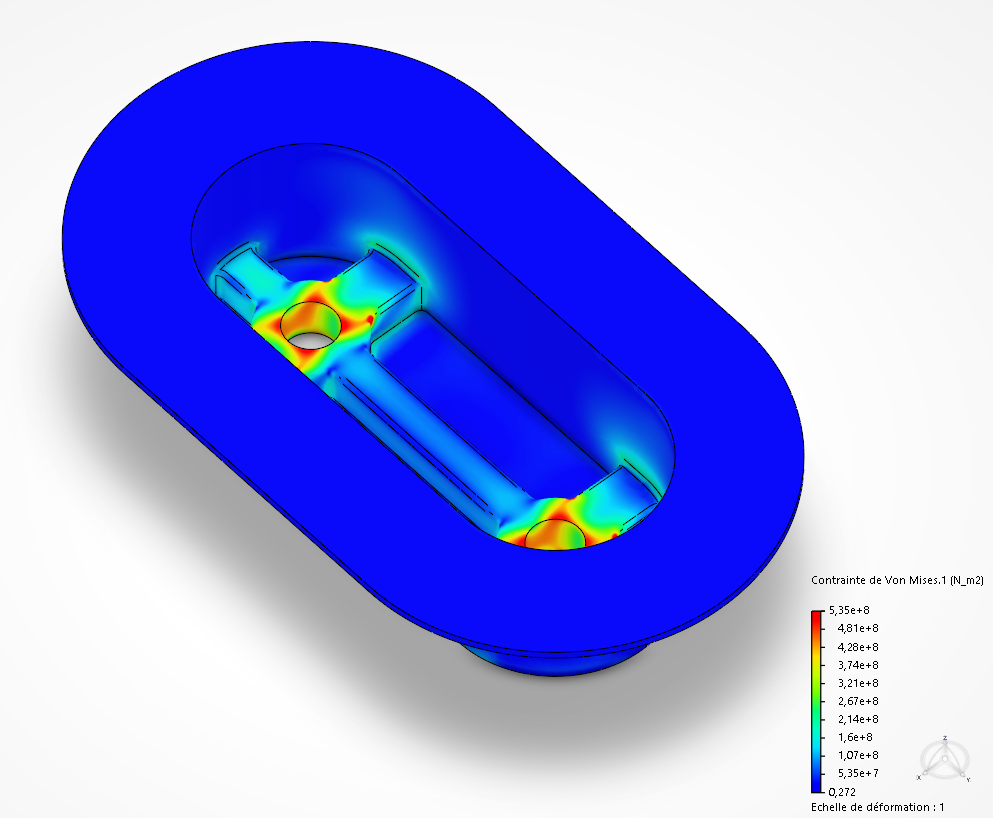
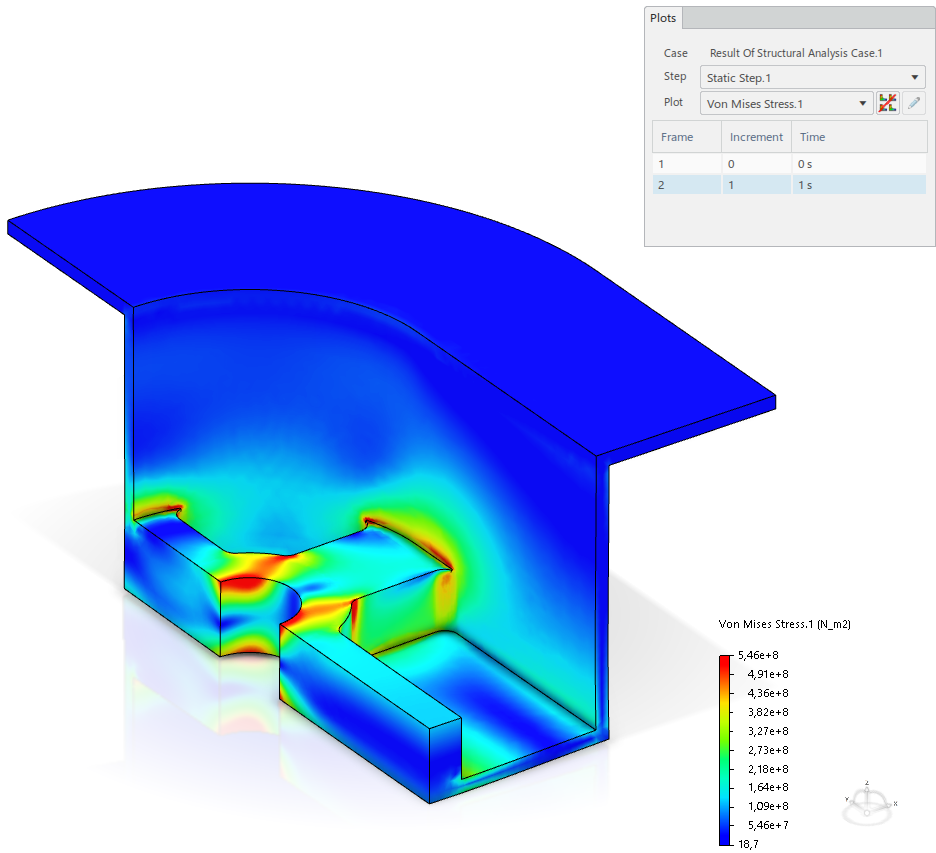
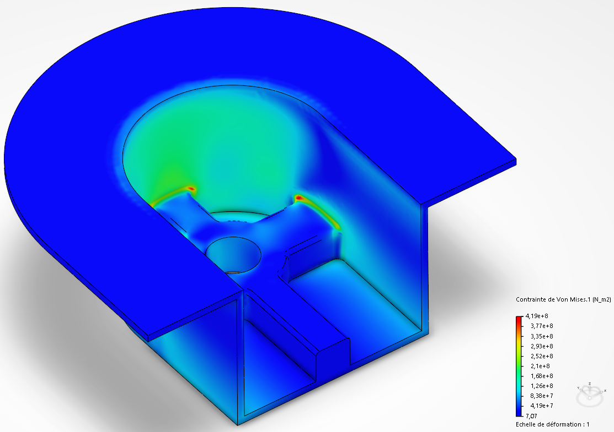

FEA of Suspension Inserts
Finite element analysis of a double aluminium suspension insert developed for the EPFL Racing Team, with focus on stiffness, stress distribution and safety under representative traction, shear and torsion load cases.

Project Overview
This project focused on the structural validation of a double suspension insert integrated into the monocoque-side interface of a Formula Student car. The part is designed to transfer localized suspension loads from the external attachment into the main carbon structure while remaining compact, lightweight and mechanically reliable.
The work combined CAD preparation, finite element modelling in 3DEXPERIENCE, mesh convergence studies and interpretation of critical loading scenarios. Beyond simple stress visualization, the objective was to understand where the geometry was efficient, where it was sensitive, and which areas required more attention for future design iterations.
Methodology
The insert was analysed using a linear static finite element model. Depending on the load case, geometric symmetry was exploited to reduce computational cost: a quarter model for traction, a half model for shear, and the full part for torsion where no meaningful symmetry could be preserved.
Particular attention was given to mesh refinement around holes, fillets and internal transitions, where stress gradients were expected to be highest. A dedicated convergence study was then carried out to ensure that the selected mesh offered a good balance between numerical accuracy and calculation time.
Load Cases
Three main loading situations were studied: traction, shear and torsion. These cases were chosen to represent the most relevant ways in which the insert can be solicited once integrated into the suspension interface of the car.
- Traction to assess axial load transfer and global rigidity
- Shear to evaluate lateral loading and local stress concentrations
- Torsion to investigate the most demanding load path for the current geometry
- Refined local meshing used to capture critical zones with greater accuracy
Main Results
The simulations showed that the insert remains globally stiff and mechanically relevant for most of the studied situations. Traction and shear produced controlled displacement levels and helped identify the structural role of the reinforced regions and bolt interfaces.
Torsion appeared as the most critical case, with more demanding local stress levels and the lowest factor of safety. This makes it the most important load case for future design improvement, especially around internal transitions and localized stress concentration areas.
Image Gallery



